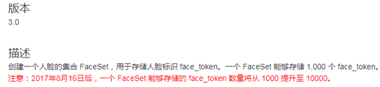
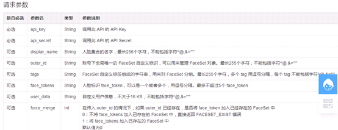
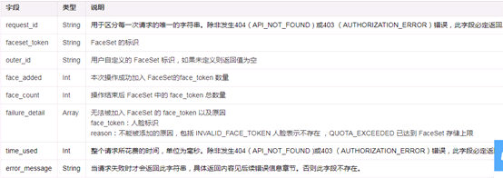
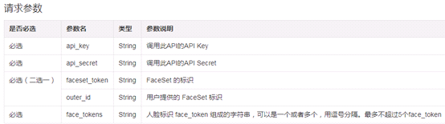
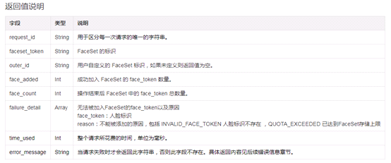
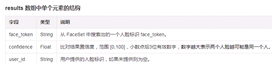
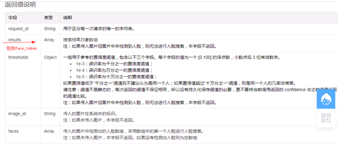
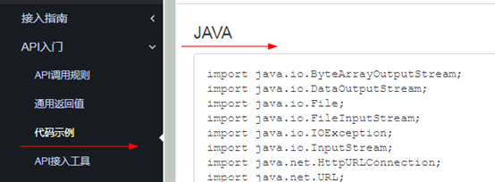
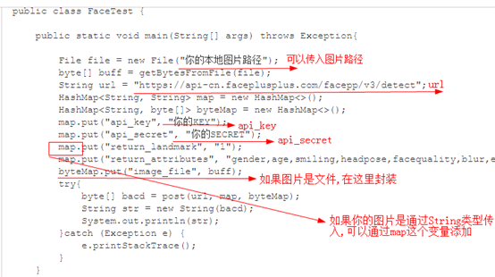

原文连接:https://www.cnblogs.com/aihuadung/p/11592967.html
java使用face++简单实现人脸识别注册登录
前言
人脸识别,好高大上!!!
理解之后很简单。
支付宝使用的就是face++,
至于face++账号信息,apikey…..,本文不做讲述,网上很多.
一.设计思想
1. 先想一想,如果让你实现人脸识别,你会怎么做?
寻找图片上的关键点,制作一套算法,分析脸部信息,将得到的数据存入数据库,
登录的时候,通过同样的算法,分析数据,和数据库中存入的信息进行比对……
工作量好大!!!
face++有着它独有的非常优秀的算法,我们可以将我们的图片上传到face++服务器来获取对应的图片数据,剩下的事情就很简单了
2. 四个face++ api简介:
这里只介绍用到的api,
2.1 使用api肯定需要先注册一下信息,获取api_key和api_secret,可以注册试用的进行获取

2.2 create
作用: 创建一个FaceSet,创建一个脸部信息集合,引用官网的描述:

url:https://api-cn.faceplusplus.com/facepp/v3/faceset/create
参数:api_key,api_secret,……

返回值: faceset_token, outer_id……,这里写的两个返回值需要记住,是这个脸部信息集合的唯一标识,具体返回值信息如下图:

2.3 addFace
作用:向脸部信息集合faceSet添加一条或多条脸部信息,便于后期搜索
url: https://api-cn.faceplusplus.com/facepp/v3/faceset/addface
参数: 不用说,肯定需要,api_key,api_secret,faceSet_token或outer_id(脸部信息唯一标识),还有图片信息,官网截图:

返回值:可以获取插入的结果信息

.

2.4 Search
作用: 传入一张图片信息到face++服务器,会返回最相似的face_token
url: https://api-cn.faceplusplus.com/facepp/v3/search
参数:api_key,api_secret,image_url或image_file或image_base64或face_token,详细参数列表如下
|
是否必选 |
参数名 |
类型 |
参数说明 |
|
必选 |
api_key |
String |
调用此 API 的 API Key |
|
必选 |
api_secret |
String |
调用此 API 的 API Secret |
|
必选（四选一） |
face_token |
String |
进行搜索的目标人脸的 face_token，优先使用该参数 |
|
image_url |
String |
目标人脸所在的图片的 URL |
|
|
image_file |
File |
目标人脸所在的图片，二进制文件，需要用 post multipart/form-data 的方式上传。 |
|
|
image_base64 |
String |
base64 编码的二进制图片数据 如果同时传入了 image_url、image_file 和 image_base64 参数，本 API 使用顺序为 image_file 优先，image_url 最低。 |
|
|
必选（二选一） |
faceset_token |
String |
用来搜索的 FaceSet 的标识 |
|
outer_id |
String |
用户自定义的 FaceSet 标识 |
|
|
可选 |
return_result_count |
Int |
控制返回比对置信度最高的结果的数量。合法值为一个范围 [1,5] 的整数。默认值为 1 |
|
可选（仅正式 API Key 可以使用） |
face_rectangle |
String |
当传入图片进行人脸检测时，是否指定人脸框位置进行检测。 如果此参数传入值为空，或不传入此参数，则不使用此功能。本 API 会自动检测图片内所有区域的所有人脸。 如果使用正式 API Key 对此参数传入符合格式要求的值，则使用此功能。需要传入一个字符串代表人脸框位置，系统会根据此坐标对框内的图像进行人脸检测，以及人脸关键点和人脸属性等后续操作。系统返回的人脸矩形框位置会与传入的 face_rectangle 完全一致。对于此人脸框之外的区域，系统不会进行人脸检测，也不会返回任何其他的人脸信息。 参数规格：四个正整数，用逗号分隔，依次代表人脸框左上角纵坐标（top），左上角横坐标（left），人脸框宽度（width），人脸框高度（height）。例如：70,80,100,100 注：只有在传入 image_url、image_file 和 image_base64 三个参数中任意一个时，本参数才生效。 |
返回值:返回值包含和你传入图片信息最像的图片的face_token,(可以再和数据库中对应的信息进行比较)

2.4 Detect
作用:
传入一张图片信息,获取这张图片的face_token,注意,一张相同图片获取多次的face_token不同
url: https://api-cn.faceplusplus.com/facepp/v3/detect
参数:api_key,api_secret, image_url或image_file或image_base64,
|
是否必选 |
参数名 |
类型 |
参数说明 |
||||||
|
必选 |
api_key |
String |
调用此API的API Key |
||||||
|
必选 |
api_secret |
String |
调用此API的API Secret |
||||||
|
必选（三选一） |
image_url |
String |
图片的 URL。 注：在下载图片时可能由于网络等原因导致下载图片时间过长，建议使用 image_file 或 image_base64 参数直接上传图片。 |
||||||
|
image_file |
File |
一个图片，二进制文件，需要用post multipart/form-data的方式上传。 |
|||||||
|
image_base64 |
String |
base64 编码的二进制图片数据 如果同时传入了 image_url、image_file 和 image_base64 参数，本API使用顺序为 image_file 优先，image_url 最低。 |
|||||||
|
可选 |
return_landmark |
Int |
是否检测并返回人脸关键点。合法值为：
注：本参数默认值为 0 |
||||||
|
可选 |
return_attributes |
String |
是否检测并返回根据人脸特征判断出的年龄、性别、情绪等属性。合法值为：
注：本参数默认值为 none |
||||||
|
可选（仅正式 API Key 可以使用） |
calculate_all |
Int |
是否检测并返回所有人脸的人脸关键点和人脸属性。如果不使用此功能，则本 API 只会对人脸面积最大的五个人脸分析人脸关键点和人脸属性。合法值为：
注：本参数默认值为 0 |
||||||
|
可选（仅正式 API Key 可以使用） |
face_rectangle |
String |
是否指定人脸框位置进行人脸检测。 如果此参数传入值为空，或不传入此参数，则不使用此功能。本 API 会自动检测图片内所有区域的所有人脸。 如果使用正式 API Key 对此参数传入符合格式要求的值，则使用此功能。需要传入一个字符串代表人脸框位置，系统会根据此坐标对框内的图像进行人脸检测，以及人脸关键点和人脸属性等后续操作。系统返回的人脸矩形框位置会与传入的 face_rectangle 完全一致。对于此人脸框之外的区域，系统不会进行人脸检测，也不会返回任何其他的人脸信息。 参数规格：四个正整数，用逗号分隔，依次代表人脸框左上角纵坐标（top），左上角横坐标（left），人脸框宽度（width），人脸框高度（height）。例如：70,80,100,100 |
||||||
|
可选 |
beauty_score_min |
Int |
颜值评分分数区间的最小值。默认为0 注：默认颜值评分分数区间为0-100.可通过beauty_score_min和beauty_score_max来调节分数区间，满足您的场景需求。 |
||||||
|
可选 |
beauty_score_max |
Int |
颜值评分分数区间的最大值。默认为100 |
返回值:图片对应的face_token
|
字段 |
类型 |
说明 |
|
request_id |
String |
用于区分每一次请求的唯一的字符串。 |
|
faces |
Array |
被检测出的人脸数组，具体包含内容见下文。 注：如果没有检测出人脸则为空数组 |
|
image_id |
String |
被检测的图片在系统中的标识。 |
|
time_used |
Int |
整个请求所花费的时间，单位为毫秒。 |
|
error_message |
String |
当请求失败时才会返回此字符串，具体返回内容见后续错误信息章节。否则此字段不存在。 |
在faces中包含face_token
3. 设计分析
- 创建调用create api创建faceSet,取得faceSet_token,对应你的一张用户信息表
- 注册时:调用detect api传入用户注册的图片信息,获取face_token,
将face_token存入faceSet,(调用addFace api存入)
将face_token存入数据库
- 登录: 从前端获取用户图片,将图片编码为base64作为参数image_base64调用search api
返回值为在faceSet中,和传入图片相似度高的face_token
通过返回的face_token,在数据库中进行查询,实现登陆
二.用到的技术
有了上面的分析,即使使用javaweb也能实现了
本案例使用
maven
java的ssm框架
配上Druid连接池
前端使用了jquery,(不懂前端,通过参考和自己设计写的很low)
三.实现
3.1前端界面:
实体类:
User{
String username;
String password;
String other; //在本案例中没有作用
String faceToken;
}
技术不高,自己写的一个简单的界面
注册界面:register.html
|
<!DOCTYPE html>
|
登录界面:login.html
|
3.2后端界面
face相关类,通过face++官网查到一个demo,本案例修改demo并封装了自己的信息,打成实现功能

获取到的demo:
|
哪里需要改?

四.总结
人无我有,人有我优
思路很清晰,具体实现很难!!!
实现后感觉很简单